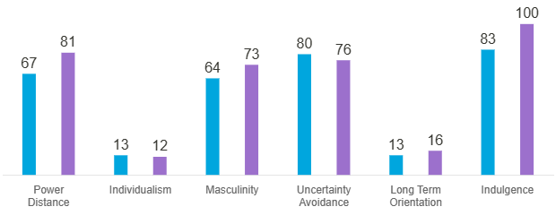

Have you ever wondered how Venezuela and Colombia, two neighboring countries in South America, have many similarities in their cultures?
By using the Hofstede model of cultural dimensions, we can analyze the differences and similarities between Venezuela and Colombia in terms of power distance, masculinity and long-term orientation.
Masculinity
How do Colombians and Venezuelans demonstrate similar levels of masculinity in their cultural values, as seen through their emphasis on competition and achievement?
Both countries have high scores on masculinity, which means that they place a high value on assertiveness, competitiveness, and achievement. However, Venezuela's score is slightly higher, suggesting that Venezuelan society may be more assertive and competitive than Colombian society.
Power Distance
How does the power distance in Venezuela compare to that of Colombia?
Both Venezuela and Colombia have relatively high-power distance scores, meaning that they tend to have hierarchical social structures and expect deference to authority figures. However, Venezuela's score is a little higher than Colombia's, suggesting that Venezuelans may be more accepting of unequal distributions of power and wealth.
Long-term orientation
How does the relatively low level of long-term orientation in both nations shape their approaches to tradition and innovation?
Both countries have relatively low scores on long-term orientation, suggesting that they tend to prioritize immediate gratification and short-term results over long-term planning and investment. However, Venezuela's score is slightly lower than Colombia's, indicating that Venezuelans may be more focused on the present moment than Colombians.
Example
Colombia
Venezuela

By examining the Hofstede cultural dimensions, it becomes clear that while Colombia and Venezuela have distinct cultural identities, they also share many commonalities. From their similar levels of masculinity and power-distance to their shared approach to long-term orientation, it is clear that these two neighboring countries have much in common. Recognizing these similarities can help to foster greater cooperation and understanding between the two nations, and ultimately, promote a stronger sense of unity and community across Latin America.